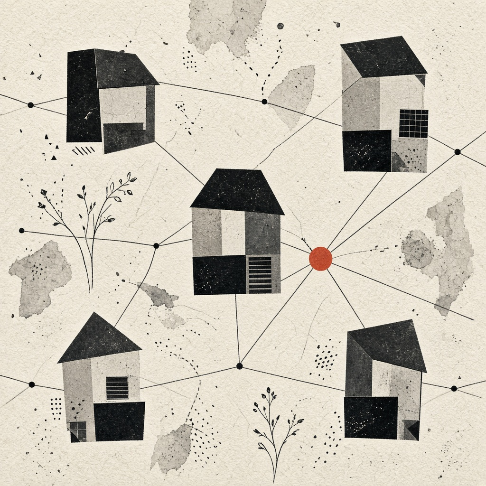

Atlas · Fernandópolis/SP · 2026
Pedro Henrique
Sistemas de Informação · produtos digitais · GenAI aplicada
02
Produto em operação
Empresa própria e entregas com cliente real — não só protótipo de aula.

Marketplace
Looma Marketplace
Marketplace multi-vendor (Node.js + Express + MySQL) — módulos de vitrine e operação comercial.
Cliente · e-commerce
PERUOFICIAL
Loja física iniciando no digital — vitrine e fluxo de compra sob a Cybhor.
03
GenAI que roda
Três demos em Python — RAG, agente com tools e automação com horas economizadas.
RAG Cardápio / FAQ
Retrieval TF-IDF, intenção e resposta grounded. Demo Gradio + dataset HF.
AbrirAgente Ops
Orquestra ferramentas de pedido, SLA e tickets com trace JSON.
AbrirAutomação relatório
~50 min/dia → segundos. KPIs, alertas e manifesto tipo n8n/Make.
AbrirArraste horizontalmente · repo completo
04
Sobre
Estudante de Sistemas de Informação (4º/8, formatura prevista 2º sem/2028). Estágio de TI na Prefeitura de Fernandópolis. Tiro de Guerra encerrando em nov/2026. Constrói software do briefing ao deploy — com Cybhor Tech já atendendo cliente.
- Stack
- Python, JS, HTML/CSS, Git, APIs, Gradio, Linux
- IA
- RAG, agentes com tools, prompts, automações
- Idiomas
- PT nativo · EN leitura técnica